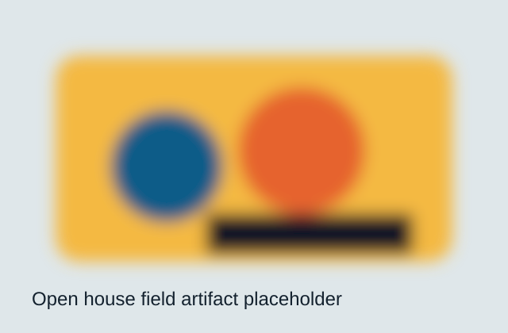
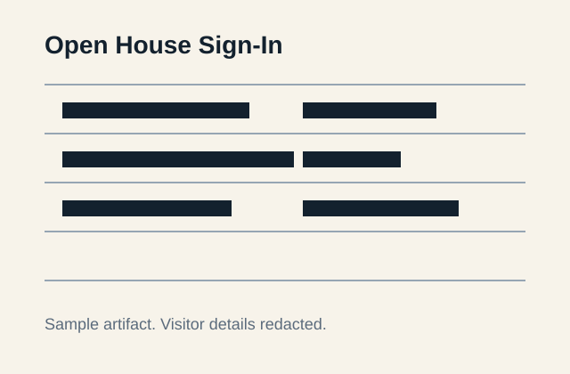

Macro Trend
Market enters a downtrend ⇒ home values stagnate.
Policy & Economic Landscape
An autonomous investigation into how local REET structures drive up listing prices and lock out buyers.
Bellevue currently layers local REET 1 and REET 2 into a 0.50% local rate, while this prototype compares that burden with a 0.25% scenario for policy contrast.
Interactive Diagram
Follow the pathway from macro pressure to transaction chill. Hover or focus each card for a research annotation.
Market enters a downtrend ⇒ home values stagnate.
Seller must break even on mortgage but pays flat 0.50% local REET.
Seller raises the list price by the tax amount, including tax-on-tax, to preserve proceeds.
Buyer affordability drops → sellers pull listings → transactions stall.
The Data Engine
Enter a sale price and compare Bellevue’s local REET burden with a peer local-rate scenario.
Prototype municipal map using DOR-style local REET rate data. Hover or focus markers to inspect rates.
The Human Cost
Broker notes, field observations, and market data translated into copy-editable civic storytelling.
Three-minute narration placeholder summarizing a May 22, 2026 Bellevue broker interview about net-proceeds protection, buyer affordability, and the pricing baseline created by the local 0.50% REET.
In a cooling market, the broker described sellers as calculating backward from the cash they need to clear. Bellevue’s local REET becomes part of the baseline, then buyers meet that burden through higher asking prices when demand permits. When demand softens, the gap appears as withdrawn listings, price cuts, or stalled negotiations.
“Sellers protect net margins fiercely in a downturn. Bellevue’s flat 0.50% REET does not just fund the city. It can prevent sales from happening in the first place.” Local Real Estate Agent, May 22, 2026
“A buyer sees the monthly payment. A seller sees net proceeds. REET sits between them like a quiet wedge.” Field note synthesis
During the open house, buyers asked less about finishes and more about total monthly carrying cost. Several paused at the combined pressure of prices, rates, and taxes. Redfin’s March 2026 Bellevue snapshot reported a $1.5M median sale price and a 6.7% year-over-year decline, underscoring a market that remains expensive even while cooling.


The Civic Dilemma
Any serious REET reform must account for affordability and infrastructure finance at the same time.
Policy trade-offs are complex: revenue stability, equity, and market liquidity may pull in different directions.
Mobilize
Turn the research into a respectful, specific request for review by Bellevue elected officials.
Scaffolding Specification
This static build includes the requested civic narrative and leaves a documented path for productization.
/ anchors to five sections: Market Friction, Data Engine, Human Cost, Civic Dilemma, and Mobilize. Future nested routes can include /reports/:id, /data/trends, and /limitations.
Suggested entities: users, properties, local_reet_rates, interviews, field_observations, council_comments, analytics_events, and reports.
REST endpoints can expose GET /api/rates, POST /api/calculations, GET /api/interviews, and POST /api/council-comments. GraphQL can consolidate this with typed queries.
Target WCAG 2.1 AA contrast, keyboard navigation, semantic HTML, per-page SEO metadata, privacy-conscious analytics, CSP headers, validation, structured logging, and automated unit, integration, E2E, and accessibility tests.